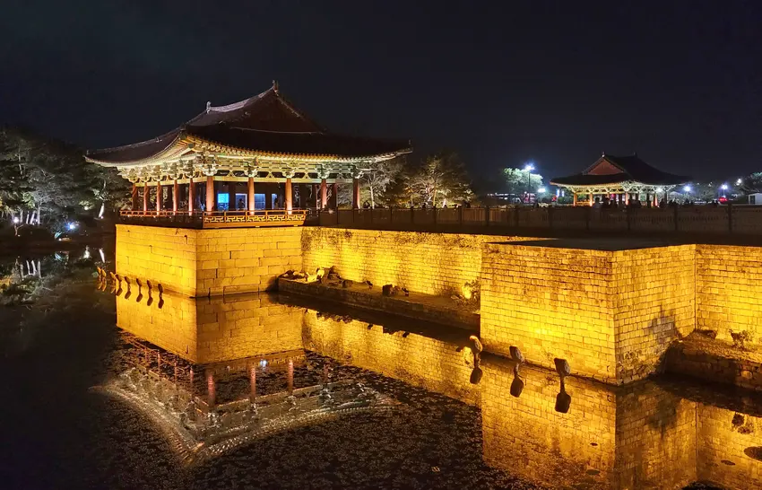

Play · Korean chess
Your first Janggi moves
Try four short exercises and learn why even a familiar-looking horse moves differently here.
Learn Janggi →Explore Korea by playing
Recognize a place from a photo? Know how a Korean chess piece moves? Try both in your browser.
Play the photo quiz
Cover photo: Bernard Gagnon, Wikimedia Commons (CC0).
Play · Korean chess
Try four short exercises and learn why even a familiar-looking horse moves differently here.
Learn Janggi →Read · Travel notes
Make a trip out of the places you recognize. Our K-Trip Notes itinerary includes temple grounds, historic tombs and Wolji Pond after dark.
Read the K-Trip Notes itinerary →